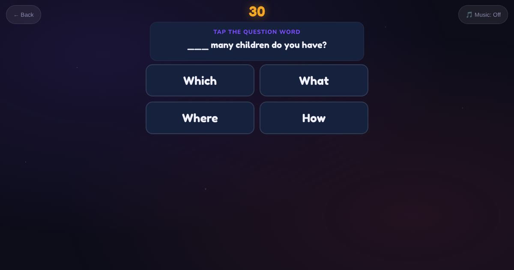

For teachers and tutors
About Test Yourself: Grammar
An adaptive grammar check: question words, word order in sentences, and capitals and full stops. It draws on Question Words, Grammar Unscramble, Listen and Unscramble and Capitals and Full Stops.

How to play
- Answer each round.
- The test changes to match you.
- See your results.
Play it as a class
Students take it on their own phones.